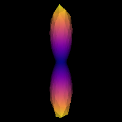
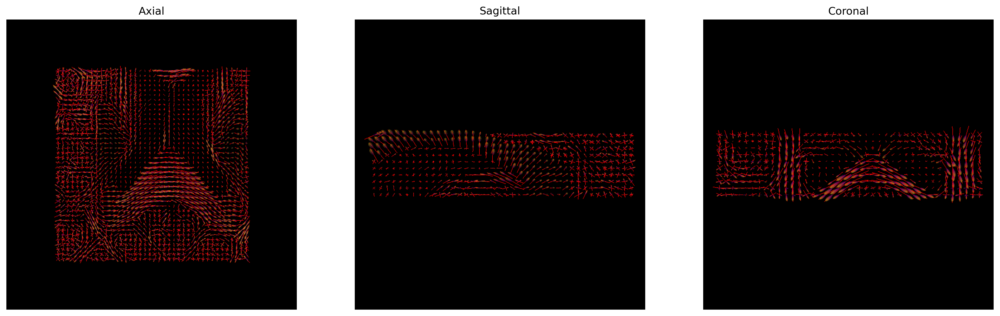
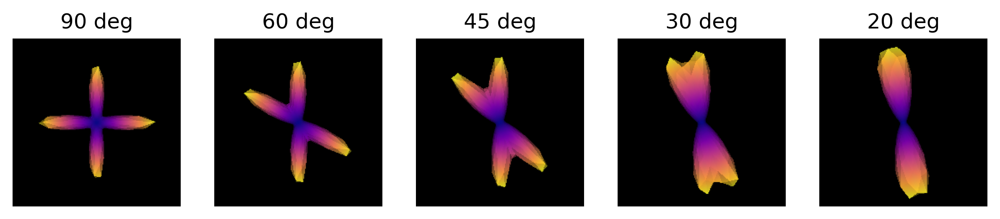

Constrained Spherical Deconvolution (CSD)
Last updated on 2024-02-18 | Edit this page
Estimated time: 35 minutes
Overview
Questions
- What is Constrained Spherical Deconvolution (CSD)?
- What does CSD offer compared to DTI?
Objectives
- Understand Spherical Deconvolution
- Visualizing the fiber Orientation Distribution Function
Constrained Spherical Deconvolution (CSD)
Spherical Deconvolution (SD) is a set of methods to reconstruct the local fiber Orientation Distribution Functions (fODF) from diffusion MRI data. They have become a popular choice for recovering the fiber orientation due to their ability to resolve fiber crossings with small inter-fiber angles in datasets acquired within a clinically feasible scan time. SD methods are based on the assumption that the acquired diffusion signal in each voxel can be modeled as a spherical convolution between the fODF and the fiber response function (FRF) that describes the common signal profile from the white matter (WM) bundles contained in the voxel. Thus, if the FRF can be estimated, the fODF can be recovered as a deconvolution problem by solving a system of linear equations. These methods can work on both single-shell and multi-shell data.
The basic equations of an SD method can be summarized as 
Spherical deconvolution
There are a number of variants to the general SD framework that differ, among others, in the minimization objective and the regularization penalty imposed to obtain some desirable properties in the linear equation framework.
In order to perform the deconvolution over the sphere, the spherical representation of the diffusion data has to be obtained. This is done using the so-called Spherical Harmonics (SH) which are a basis that allow to represent any function on the sphere (much like the Fourier analysis allows to represent a function in terms of trigonometric functions).
In this episode we will be using the Constrained Spherical Deconvolution (CSD) method proposed by Tournier et al. in 2007. In essence, CSD imposes a non-negativity constraint in the reconstructed fODF. For the sake of simplicity, single-shell data will be used in this episode.
Let’s start by loading the necessary data. For simplicity, we will assume that the gradient table is the same across all voxels after the pre-processing.
PYTHON
import os
import nibabel as nib
import numpy as np
from bids.layout import BIDSLayout
from dipy.core.gradients import gradient_table
from dipy.data import default_sphere
from dipy.io.gradients import read_bvals_bvecs
from dipy.io.image import load_nifti
dwi_layout = BIDSLayout('../../data/ds000221/derivatives/uncorrected_topup_eddy/', validate=False)
t1_layout = BIDSLayout('../../data/ds000221/derivatives/uncorrected_topup_eddy_regT1/', validate=False)
gradient_layout = BIDSLayout('../../data/ds000221/sub-010006/ses-01/dwi/', validate=False)
subj = '010006'
# Get the diffusion files
dwi_fname = dwi_layout.get(subject=subj, suffix='dwi', extension='.nii.gz', return_type='file')[0]
bvec_fname = dwi_layout.get(subject=subj, extension='.eddy_rotated_bvecs', return_type='file')[0]
bval_fname = gradient_layout.get(subject=subj, suffix='dwi', extension='.bval', return_type='file')[0]
# Get the anatomical file
t1w_fname = t1_layout.get(subject=subj, extension='.nii.gz', return_type='file')[0]
data, affine = load_nifti(dwi_fname)
bvals, bvecs = read_bvals_bvecs(bval_fname, bvec_fname)
gtab = gradient_table(bvals, bvecs)You can verify the b-values of the dataset by looking at the
attribute gtab.bvals. Now that a datasets with multiple
gradient directions is loaded, we can proceed with the two steps of
CSD.
Step 1. Estimation of the fiber response function.
In this episode the response function will be estimated from a local brain region known to belong to the white matter and where it is known that there are single coherent fiber populations. This is determined by checking the Fractional Anisotropy (FA) derived from the DTI model.
For example, if we use an ROI at the center of the brain, we will
find single fibers from the corpus callosum. DIPY’s
auto_response_ssst function will calculate the FA for an
ROI of radius equal to roi_radii in the center of the
volume, and return the response function estimated in that region for
the voxels with FA higher than a given threshold.
The fiber response function and the diffusion model
The auto_response_ssst method is relevant within a
Single-Shell Single-Tissue (SSST) context/model; e.g. Multi-Shell
Multi-Tissue (MSMT) context/models require the fiber response function
to be computed differently.
PYTHON
from dipy.reconst.csdeconv import auto_response_ssst
response, ratio = auto_response_ssst(gtab, data, roi_radii=10, fa_thr=0.7)
# Create the directory to save the results
out_dir = '../../data/ds000221/derivatives/dwi/reconstruction/sub-%s/ses-01/dwi/' % subj
if not os.path.exists(out_dir):
os.makedirs(out_dir)
# Save the FRF
np.savetxt(os.path.join(out_dir, 'frf.txt'), np.hstack([response[0], response[1]]))The response tuple contains two elements. The first is
an array with the eigenvalues of the response function and the second is
the average S0 signal value for this response.
Validating the numerical value of the response function is
recommended to ensure that the FA-based strategy provides a good result.
To this end, the elements of the response tuple can be
printed and their values be studied.
OUTPUT
(array([0.00160273, 0.00034256, 0.00034256]), 209.55229)The tensor generated belonging to the response function must be prolate (two smaller eigenvalues should be equal), and look anisotropic with a ratio of second to first eigenvalue of about 0.2. Or in other words, the axial diffusivity of this tensor should be around 5 times larger than the radial diffusivity. It is generally accepted that a response function with the mentioned features is representative of a coherently oriented fiber population.
OUTPUT
0.2137331138364376It is good practice to visualize the response function’s ODF, which also gives an insightful idea around the SD framework. The response function’s ODF should have sharp lobes, as the anisotropy of its diffusivity indicates:
PYTHON
import matplotlib.pyplot as plt
from dipy.sims.voxel import single_tensor_odf
from fury import window, actor
%matplotlib inline
scene = window.Scene()
evals = response[0]
evecs = np.array([[0, 1, 0], [0, 0, 1], [1, 0, 0]]).T
response_odf = single_tensor_odf(default_sphere.vertices, evals, evecs)
# transform our data from 1D to 4D
response_odf = response_odf[None, None, None, :]
response_actor = actor.odf_slicer(response_odf, sphere=default_sphere,
colormap='plasma')
scene.add(response_actor)
response_scene_arr = window.snapshot(
scene, fname=os.path.join(out_dir, 'frf.png'), size=(200, 200),
offscreen=True)
fig, axes = plt.subplots()
axes.imshow(response_scene_arr, cmap="plasma", origin="lower")
axes.axis("off")
plt.show()
Estimated response function
Note that, although fast, the FA threshold might not always be the best way to find the response function, since it depends on the diffusion tensor, which has a number of limitations. Similarly, different bundles are known to have different response functions. More importantly, it also varies across subjects, and hence it must be computed on a case basis.
Step 2. fODF reconstruction
After estimating a response function, the fODF is reconstructed through the deconvolution operation. In order to obtain the spherical representation of the diffusion signal, the order of the Spherical Harmonics expansion must be specified. The order, \(l\), corresponds to an angular frequency of the basis function. While the series is infinite, it must be truncated to a maximum order in practice to be able to represent the diffusion signal. The maximum order will determine the number of SH coefficients used. The number of diffusion encoding gradient directions must be at least as large as the number of coefficients. Hence, the maximum order \(l\_{max}\) is determined by the equation \(R = (l\_{max}+1)(l\_{max}+2)/2\), where \(R\) is the number of coefficients. For example, an order \(l\_{max} = {4, 6, 8}\) SH series has \(R = {15, 28, 45}\) coefficients, respectively. Note the use of even orders: even order SH functions allow to reconstruct symmetric spherical functions. Traditionally, even orders have been used motivated by the fact that the diffusion process is symmetric around the origin.
The CSD is performed in DIPY by calling the
fit method of the CSD model on the diffusion data:
PYTHON
from dipy.reconst.csdeconv import ConstrainedSphericalDeconvModel
sh_order = 8
csd_model = ConstrainedSphericalDeconvModel(gtab, response, sh_order=sh_order, convergence=50)For illustration purposes we will fit only a small portion of the data representing the splenium of the corpus callosum.
PYTHON
data_small = data[40:80, 40:80, 45:55]
csd_fit = csd_model.fit(data_small)
sh_coeffs = csd_fit.shm_coeff
# Save the SH coefficients
nib.save(nib.Nifti1Image(sh_coeffs.astype(np.float32), affine),
os.path.join(out_dir, 'sh_coeffs.nii.gz'))Getting the fODFs from the model fit is straightforward in
DIPY. As a side note, it is worthwhile mentioning that the
orientation distribution recovered by SD methods is also named fODFs to
distinguish from the diffusion ODFs (dODFs) that other reconstruction
methods recover. The former are considered to be a sharper version of
the latter. At times, they are also called Fiber Orientation
Distribution (FOD).
We will now use the generate_anatomical_slice_figure
utility function that allows us to generate three anatomical views
(axial superior, sagittal right and coronal anterior) of the data.
Here we visualize only the central slices of the 40x40x10 region
(i.e. the [40:80, 40:80, 45:55] volume data region) that
has been used.
PYTHON
from utils.visualization_utils import generate_anatomical_slice_figure
colormap = "plasma"
# Build the representation of the data
fodf_actor = actor.odf_slicer(csd_odf, sphere=default_sphere, scale=0.9,
norm=False, colormap=colormap)
# Compute the slices to be shown
slices = tuple(elem // 2 for elem in data_small.shape[:-1])
# Generate the figure
fig = generate_anatomical_slice_figure(slices, fodf_actor, cmap=colormap)
fig.savefig(os.path.join(out_dir, "csd_odfs.png"), dpi=300,
bbox_inches="tight")
plt.show()
CSD ODFs.
The peak directions (maxima) of the fODFs can be found from the
fODFs. For this purpose, DIPY offers the
peaks_from_model method.
PYTHON
from dipy.direction import peaks_from_model
from dipy.io.peaks import reshape_peaks_for_visualization
csd_peaks = peaks_from_model(model=csd_model,
data=data_small,
sphere=default_sphere,
relative_peak_threshold=.5,
min_separation_angle=25,
parallel=True)
# Save the peaks
nib.save(nib.Nifti1Image(reshape_peaks_for_visualization(csd_peaks),
affine), os.path.join(out_dir, 'peaks.nii.gz'))
peak_indices = csd_peaks.peak_indices
nib.save(nib.Nifti1Image(peak_indices, affine), os.path.join(out_dir,
'peaks_indices.nii.gz'))We can visualize them as usual using FURY:
PYTHON
# Build the representation of the data
peaks_actor = actor.peak_slicer(csd_peaks.peak_dirs, csd_peaks.peak_values)
# Generate the figure
fig = generate_anatomical_slice_figure(slices, peaks_actor, cmap=colormap)
fig.savefig(os.path.join(out_dir, "csd_peaks.png"), dpi=300,
bbox_inches="tight")
plt.show()
CSD Peaks.
We can finally visualize both the fODFs and peaks in the same space.
PYTHON
fodf_actor.GetProperty().SetOpacity(0.4)
# Generate the figure
fig = generate_anatomical_slice_figure(slices, peaks_actor, fodf_actor,
cmap=colormap)
fig.savefig(os.path.join(out_dir, "csd_peaks_fodfs.png"), dpi=300,
bbox_inches="tight")
plt.show()
CSD Peaks and ODFs.
References
.. [Tournier2007] J-D. Tournier, F. Calamante and A. Connelly, “Robust determination of the fibre orientation distribution in diffusion MRI: Non-negativity constrained super-resolved spherical deconvolution”, Neuroimage, vol. 35, no. 4, pp. 1459-1472, 2007.
Exercise 1
Simulate the ODF for two fibre populations with crossing angles of 90, 60, 45, 30, and 20 degrees. We have included helpful hints and code below to help you get started.
Helpful hints:
- To set the angle between tensors, use
[(0, 0), (angle, 0)]. - You may need to use a higher resolution sphere than
default_sphere. - You may need to rotate the scene to visualize the ODFs.
- Below is some code to simulate multiple fibre orientations:
We will first simulate the ODFs for the different crossing angles:
PYTHON
import numpy as np
from dipy.data import get_sphere
from dipy.sims.voxel import multi_tensor_odf
# Set eigenvalues for tensors
mevals = np.array(([0.0015, 0.00015, 0.00015], [0.0015, 0.00015, 0.00015]))
# Set fraction for each tensor
fractions = [50, 50]
# Create a list of the crossing angles to be simulated
angles = [90, 60, 45, 30, 20]
odf = []
# Simulate ODFs of different angles
for angle in angles:
_angles = [(0, 0), (angle, 0)]
_odf = multi_tensor_odf(get_sphere(
"repulsion724").vertices, mevals, _angles, fractions)
odf.append(_odf)We are now able to visualize and save to disk a screenshot of each ODF crossing. As it can be seen, as the crossing angle becomes smaller, distinguishing the underlying fiber orientations becomes harder: an ODF might be unable to resolve different fiber populations at such crossings, and be only able to indicate a single orientation. This has an impact on tractography, since the tracking procedure will only be able to propagate streamlines according to peaks retrieved by the ODFs. Also, note that thi problem is worsened by the presence of noise in real diffusion data.
PYTHON
import matplotlib.pyplot as plt
from fury import window, actor
# Create the output directory to store the image
out_dir = '../../data/ds000221/derivatives/dwi/reconstruction/exercise/dwi/'
if not os.path.exists(out_dir):
os.makedirs(out_dir)
fig, axes = plt.subplots(1, len(angles), figsize=(10, 2))
# Visualize the simulated ODFs of different angles
for ix, (_odf, angle) in enumerate(zip(odf, angles)):
scene = window.Scene()
odf_actor = actor.odf_slicer(_odf[None, None, None, :], sphere=get_sphere("repulsion724"),
colormap='plasma')
odf_actor.RotateX(90)
scene.add(odf_actor)
odf_scene_arr = window.snapshot(
scene, fname=os.path.join(out_dir, 'odf_%d_angle.png' % angle), size=(200, 200),
offscreen=True)
axes[ix].imshow(odf_scene_arr, cmap="plasma", origin="lower")
axes[ix].set_title("%d deg" % angle)
axes[ix].axis("off")
plt.show()
ODFs of different crossing angles.
Key Points
- CSD uses the information along more gradient encoding directions
- It allows to resolve complex fiber configurations, such as crossings